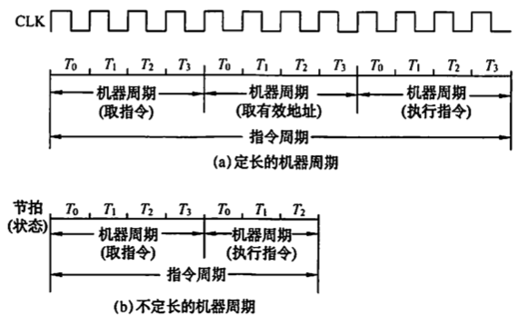
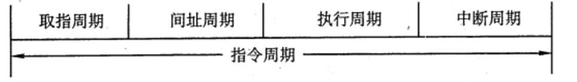
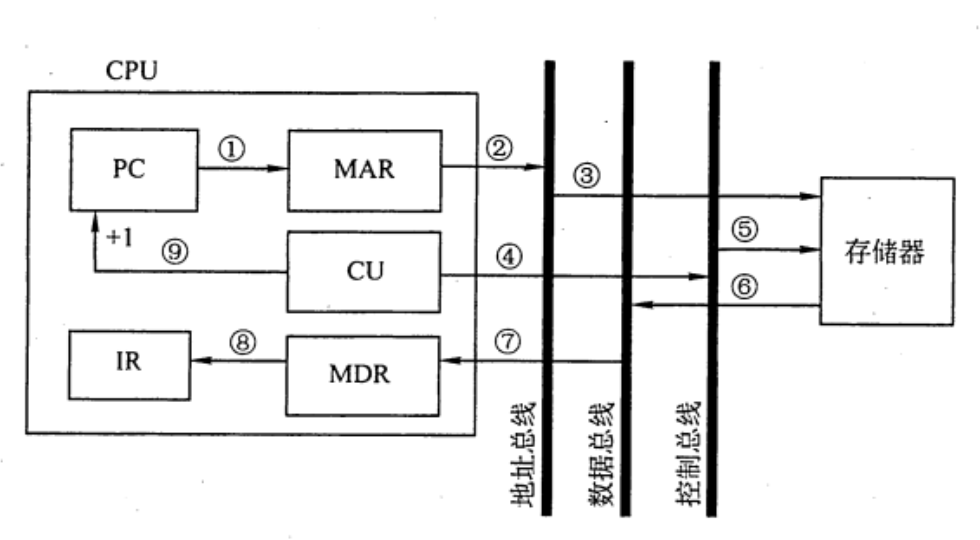
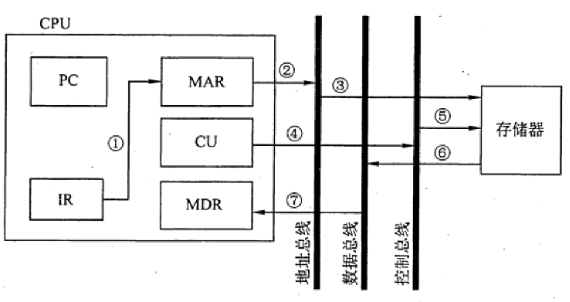
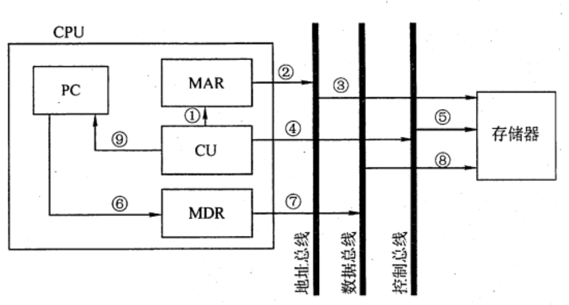

2022.11.25
- 指令周期，机器周期，时钟周期(节拍/T周期)
- 定长/不定长的机器周期
- 取址、间址、执行、中断周期
- FE、IND、EX、INT
CPU 从主存中取出并执行一条指令的时间称为指令周期，不同指令的指令周期可能不同。指令周期常用若干机器周期来表示，一个机器周期又包含者干时钟周期（也称节拍或T周期，它是 CPU 操作的最基本单位）。每个指令周期内的机器周期数可以不等，每个机器周期内的节拍数也可以不等。下图反映了上述关系。下图(a)为定长的机器周期，每个机器周期包含 4个节拍(T)；图(b)所示为不定长的机器周期，每个机器周期包含的节拍数可以为 4个，也可以为3个。

对于无条件转移指令JMP X，在执行时不需要访问主存，只包含取指阶段（包括取指和分析）和执行阶段，所以其指令周期仅包含取指周期和执行周期。
对于间接寻址的指令，为了取操作数，需要先访问一次主存，取出有效地址，然后访问主存，取出操作数，所以还需包括间址周期。间址周期介于取指周期和执行周期之间。
当 CPU 采用中断方式实现主机和 I/O 设备的信息交换时，CPU 在每条指令执行结束前，都要发中断查询信号，若有中断请求，则 CPU 进入中断响应阶段，又称中断周期。这样，一个完整的指令周期应包括取指、间址、执行和中断4个周期，如下图所示。

上述4个工作周期都有 CPU 访存操作，只是访存的目的不同。取指周期是为了取指令，间址周期是为了取有效地址，执行周期是为了取操作数，中断周期是为了保存程序断点，为了区别不同的工作周期，在 CPU 内设置 4 个标志触发器FE、IND、EX 和INT， 它们分别对应取指、间址、执行和中断周期，并以“1” 状态表示有效，分别由 1->FE、 1->IND、1->EX 和1->INT 这4个信号控制。
注意：中断周期中的进栈探作是将SP减1，这和传统意义上的进栈操作相反，原因是计算机的堆栈中都是向低地址增加，所以进栈操作是减1而不是加1.
数据流是根据指令要求依次访问的数据序列。在指令执行的不同阶段，要求依次访问的数据序列是不同的。而且对于不同的指令，它们的数据流往往也是不同的。
取指周期的任务是根据 PC 中的内容从主存中取出指令代码并存放在IR中。
取指周期的数据流如下图所示。PC 中存放的是指令的地址，根据此地址从内存单元中取出的是指令，并放在指令寄存器IR中，取指令的同时，PC加“1”。
取指操作由硬件自动完成，无需得到相应的指令。
取指周期的数据流向如下：

间址周期的任务是取操作数有效地址。以一次间址为例，将指令中的地址码送到 MAR 并送至地址总线，此后CU 向存储器发读命令，以获取有效地址并存至 MDR.

间址周期的数据流向如下： 1) Ad(IR)（或 MDR) -(1)-> MAR -(2)-> 地址总线 -(3)-> 主存 2) CU 发出读命令 -(4)-> 控制总线 -(5)-> 主存 3) 主存 -(6)-> 数据总线 -(7)-> MDR（存放有效地址）
其中，Ad(R)表示取出 IR 中存放的指令字的地址字段
执行周期的任务是取操作数，并根据 IR 中的指令字的操作码通过 ALU 操作产生执行结果。不同指令的执行周期操作不同，因此没有统一的数据流向。
中断周期的任务是处理中断请求。假设程序断点存入堆栈中，并用SP 指示栈顶地址，而且进栈操作是先修改栈顶指针，后存入数据，数据流如图所示。

中断周期的数据流向如下：(SP减1是进栈！)
一个指令周期通常要包括几个时间段（执行步骤），每个步骤完成指令的一部分功能，几个依次执行的步骤完成这条指令的全部功能。出于性能和硬件成本等考虑，可以选用3种不同的方案来安排指令的执行步骤
对所有指令都选用相同的执行时间来完成，称为单指令周期方案。此时每条指令都在固定的时钟周期内完成，指令之间串行执行，即下一条指令只能在前一条指令执行结束后才能启动。因此，指令周期取决于执行时间最长的指令的执行时间。对于那些本来可以在更短时间内完成的指令，要使用这个较长的周期来完成，会降低整个系统的运行速度。
对不同类型的指令选用不同的执行步骤，称为多指令周期方案。指令之间串行执行，即下条指令只能在前一指令执行完后才能启动。但可选用不同个数的时钟周期来完成不同指令的执行过程，指令需要几个周期就为其分配几个周期，不再要求所有指令占用相同的执行时间。
指令之间可以并行执行的方案，称为流水线方案，其追求的目标是力争在每个时钟脉冲周期完成一条指令的执行过程 （只在理想情况下才能达到该效果）。这种方案通过在每个时钟周期启动一条指令，尽量让多条指令同时运行，但各自处在不同的执行步骤中。
【答案】：A
【答案】：D
【答案】：C
【答案】：A
【答案】：B
【答案】：A->D
【答案】：D->B
【答案】：A
【答案】：B
以下有关机器周期的叙述中，错误的是( )。 A．通常把通过一次总线事务访问一次主存或 IO 的时间定为一个机器周期 B. 一个指令周期通常包含多个机器周期 C. 不同的指令周期所包含的机器周期数可能不同 D. 每个指令周期都包含一个中断响应机器周期
【答案】：D
下列说法中，合理的是(). A.执行各条指令的机器周期数相同，各机器周期的长度均匀 B. 执行各条指令的机器周期数相同，各机器周期的长度可变 C.执行各条指令的机器周期数可变，各机器周期的长度均匀 D．执行各条指令的机器周期数可变，各机器周期的长度可变
【答案】：C->D
以下关于间址周期的描述中，正确的是（）。 A. 所有指令的间址操作都是相同的 B. 凡是存储器间接寻址的指令，它们的操作都是相同的 C．对于存储器间接寻址和寄存器间接寻址，它们的操作是不同的 D. 都不对
【答案】：D->C
CPU 响应中断的时间是（ ）。 A.一条指令执行结束 C.取指周期结束 B. IO设备提出中断 D.指令周期结束
【答案】：A
以下叙述中，错误的是（ ）。 A. 取指操作是控制器固有的功能，不需要在操作码控制下完成 B. 所有指令的取指操作是相同的 C. 在指令长度相同的情况下，所有指令的取指操作是相同的 D. 中断周期是在指令执行完成后出现的
【答案】：B
（ ）可区分存储单元中存放的是指令还是数据。 A. 控制器 B.运箅器 C.存储器 D.数据通路
【答案】：A
下列说法中，正确的是（ ）。 I. 指令字长等于机器字长的前提下，取指周期等于机器周期 II. 指令字长等于存储字长的前提下，取指周期等子机器周期 III. 指令字长和机器字长的长度没有任何关系 IV. 为了硬件设计方便，指令字长都和存储字长一样大 A. II、III B. II、III、IV C. I、III、IV D. I、IV
【答案】：B->A。指令字长一般都取存储字长的整数倍，若指令字长等于存储字长的2倍，则需要两次访存，取指周期等于机器周期的 2 倍；若指令字长等于存储字长，则取指周期等于机器周期，因 此I错。根据I的分析可知，II正确。指令字长取决于操作码的长度、操作数地址的长度和操作数地址的个数，与机器字长没有必然的联系。但为了硬件设计方便，指令字长一般取字节或存储字长的整数倍，因此 III 正确。根据 III 的分析可知，指令字长一般取字节或存储字长的整数倍，而不一定都和存储字长一样大，因此IV错误。综上所述，II、III正确。
【2009 统考真题】冯•诺依曼计算机中指令和数据均以二进制形式存放在存储器中，CPU 区分它们的依据是（ ）。 A.指令操作码的译码结果 B.指令和数据的寻址方式 C.指令周期的不同阶段 D．指令和数据所在的存储单元
【答案】：C
【2011 统考真题】假定不采用Cache 和指令预取技术，且机器处于 “开中断状态，则在下列有关指令执行的叙述中，错误的是( )。 A. 每个指令周期中 CPU 都至少访问内存一次 B. 每个指令周期一定大于等于一个CPU 时钟周期 C. 空操作指令的指令周期中任何寄存器的内容都不会被改变 D. 当前程序在每条指令执行结束时都可能被外部中断打断
【答案】：C